03_pod详解
Pod是什么
Pod是Kubernetes创建或部署的最小单位。一个Pod封装一个或多个容器（container）、存储资源（volume）、一个独立的网络IP以及管理控制容器运行方式的策略选项。
Pod使用主要分为两种方式：
- Pod中运行一个容器。这是Kubernetes最常见的用法，您可以将Pod视为单个封装的容器，但是Kubernetes是直接管理Pod而不是容器。
- Pod中运行多个需要耦合在一起工作、需要共享资源的容器。通常这种场景下应用包含一个主容器和几个辅助容器（SideCar Container），如图1所示，例如主容器为一个web服务器，从一个固定目录下对外提供文件服务，而辅助容器周期性的从外部下载文件存到这个固定目录下。
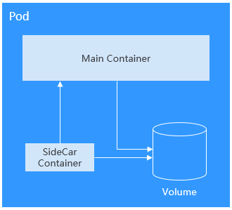
实际使用中很少直接创建Pod，而是使用Kubernetes中称为Controller的抽象层来管理Pod实例，例如Deployment和Job。
Controller可以创建和管理多个Pod，提供副本管理、滚动升级和自愈能力。
通常，Controller会使用Pod Template来创建相应的Pod。
创建Pod
kubernetes中资源可以使用YAML描述（如果您对YAML格式不了解，可以参考YAML语法），也可以使用JSON
https://support.huaweicloud.com/devg-cci/cci_05_1001.html
如下示例描述了一个名为nginx的Pod，这个Pod中包含一个名为container-0的容器，使用nginx:alpine镜像，使用的资源为100m core CPU、200Mi内存。
apiVersion: v1 # Kubernetes的API Version
kind: Pod # Kubernetes的资源类型
metadata:
name: nginx # Pod的名称
spec: # Pod的具体规格（specification）
containers:
- image: nginx:alpine # 使用的镜像为 nginx:alpine
name: container-0 # 容器的名称
resources: # 申请容器所需的资源
limits:
cpu: 100m
memory: 200Mi
requests:
cpu: 100m
memory: 200Mi
#imagePullSecrets: # 拉取镜像使用的证书，在CCE上必须为default-secret
# - name: default-secret
如上面YAML的注释，YAML描述文件主要为如下部分：
- metadata：一些名称/标签/namespace等信息。
- spec：Pod实际的配置信息，包括使用什么镜像，volume等。
如果去查询Kubernetes的资源，您会看到还有一个status字段，status描述kubernetes资源的实际状态，创建时不需要配置。这个示例是一个最小集，其他参数定义后面会逐步介绍。
Pod定义好后就可以使用kubectl创建，如果上面YAML文件名称为nginx.yaml，则创建命令如下所示，-f表示使用文件方式创建。
[root@k8s-master-10 ~]#kubectl create -f cce-pod.yaml
pod/nginx created
[root@k8s-master-10 ~]#kubectl get pod
NAME READY STATUS RESTARTS AGE
dep-nginx-779c7fd666-cvg8v 1/1 Running 0 34m
nginx 1/1 Running 0 12s
yuchao-nginx 1/1 Running 0 19h
[root@k8s-master-10 ~]#
pod状态查看
可以看到此处nginx这个Pod的状态为Running，表示正在运行；READY为1/1，表示这个Pod中有1个容器，其中1个容器的状态为Ready。
可以使用kubectl get命令查询具体Pod的配置信息，如下所示，-o yaml表示以YAML格式返回，还可以使用-o json，以JSON格式返回。
$ kubectl get pod nginx -o yaml
$ kubectl get pod nginx -o json
pod详情查看
[root@k8s-master-10 ~]#kubectl describe pod nginx
常用来查看资源创建事件
Events:
Type Reason Age From Message
---- ------ ---- ---- -------
Normal Scheduled 92s default-scheduler Successfully assigned default/nginx to k8s-node-12
Normal Pulled 92s kubelet Container image "nginx:alpine" already present on machine
Normal Created 92s kubelet Created container container-0
Normal Started 92s kubelet Started container container-0
删除pod时，Kubernetes终止Pod中所有容器。 Kubernetes向进程发送SIGTERM信号并等待一定的秒数（默认为30）让容器正常关闭。
如果它没有在这个时间内关闭，Kubernetes会发送一个SIGKILL信号杀死该进程。
pod停止删除
Pod的停止与删除有多种方法，比如按名称删除，如下所示。
一次性删除多个pod。
[root@k8s-master-10 ~]#kubectl delete pod nginx yuchao-nginx
pod "nginx" deleted
pod "yuchao-nginx" deleted
清理当前namespace下所有的pod，默认就是default
[root@k8s-master-10 ~]#kubectl describe pod dep-nginx-779c7fd666-cvg8v |grep -i ^namespace
Namespace: default
# --all参数，危险命令！
[root@k8s-master-10 ~]#kubectl delete pod --all
pod "dep-nginx-779c7fd666-cvg8v" deleted
标签选择器删除pod
kubectl delete pod -l name=www.yuchaoit.cn
pod使用环境变量
环境变量是容器运行环境中设定的一个变量。
环境变量为应用提供极大的灵活性，您可以在应用程序中使用环境变量，在创建容器时为环境变量赋值，容器运行时读取环境变量的值，从而做到灵活的配置，而不是每次都重新编写应用程序制作镜像。
环境变量的使用方法如下所示，配置spec.containers.env字段即可。
[root@k8s-master-10 ~]#kubectl explain pod.spec.containers.env
# 查看关于容器资源的cpu限制
[root@k8s-master-10 ~]#kubectl explain pod.spec.containers.resources.limits.cpu
# 官网pod限制cpu资源
https://kubernetes.io/zh-cn/docs/tasks/configure-pod-container/assign-cpu-resource/
测试yaml
apiVersion: v1
kind: Pod
metadata:
name: yuchao-nginx
spec:
containers:
- image: nginx:alpine
name: container-0
resources:
limits:
cpu: 100m
memory: 200Mi
requests:
cpu: 100m
memory: 200Mi
env: # 环境变量
- name: env_name
value: env_www.yuchaoit.cn
# imagePullSecrets:
# - name: default-secret
创建pod
[root@k8s-master-10 ~]#kubectl create -f env-pod.yaml
pod/yuchao-nginx created
[root@k8s-master-10 ~]#
查看pod内环境变量
[root@k8s-master-10 ~]#kubectl exec -it yuchao-nginx -- env
PATH=/usr/local/sbin:/usr/local/bin:/usr/sbin:/usr/bin:/sbin:/bin
HOSTNAME=yuchao-nginx
TERM=xterm
env_name=env_www.yuchaoit.cn
KUBERNETES_SERVICE_HOST=10.1.0.1
KUBERNETES_SERVICE_PORT=443
KUBERNETES_SERVICE_PORT_HTTPS=443
KUBERNETES_PORT=tcp://10.1.0.1:443
KUBERNETES_PORT_443_TCP=tcp://10.1.0.1:443
KUBERNETES_PORT_443_TCP_PROTO=tcp
KUBERNETES_PORT_443_TCP_PORT=443
KUBERNETES_PORT_443_TCP_ADDR=10.1.0.1
NGINX_VERSION=1.21.5
NJS_VERSION=0.7.1
PKG_RELEASE=1
HOME=/root
环境变量还可以引用ConfigMap和Secret，具体使用方法请参见在环境变量中引用ConfigMap和在环境变量中引用Secret。
容器启动命令
启动容器就是启动主进程，但有些时候，启动主进程前，需要一些准备工作。
比如MySQL类的数据库，可能需要一些数据库配置、初始化的工作，这些工作要在最终的MySQL服务器运行之前做完。
这些操作，可以在制作镜像时通过在Dockerfile文件中设置ENTRYPOINT或CMD来完成，如下所示的Dockerfile中设置了ENTRYPOINT ["curl", "www.yuchaoit.cn"]命令，其将会在容器启动时执行。
实际使用时，只需配置Pod的containers.command参数，该参数是list类型，第一个参数为执行命令，后面均为命令的参数。
apiVersion: v1
kind: Pod
metadata:
name: mynginx
namespace: chaoge-linux # 单独开一个ns环境
spec:
containers:
- image: nginx:alpine
name: container-0
resources:
limits:
cpu: 100m
memory: 200Mi
requests:
cpu: 100m
memory: 200Mi
command: # 启动命令
- curl
- "www.yuchaoit.cn"
# imagePullSecrets:
# - name: default-secret
创建namespace下的pod
[root@k8s-master-10 ~]#kubectl create ns chaoge-linux
namespace/chaoge-linux created
[root@k8s-master-10 ~]#kubectl create -f cmd-pod.yaml
pod/mynginx created
[root@k8s-master-10 ~]#
查看ns下的pod
[root@k8s-master-10 ~]#kubectl get pods -n chaoge-linux
NAME READY STATUS RESTARTS AGE
mynginx 0/1 CrashLoopBackOff 4 2m12s
[root@k8s-master-10 ~]#
发现咋挂了？
查看pod事件
Events:
Type Reason Age From Message
---- ------ ---- ---- -------
Normal Scheduled 2m37s default-scheduler Successfully assigned chaoge-linux/mynginx to k8s-node-12
Normal Pulled 61s (x5 over 2m37s) kubelet Container image "nginx:alpine" already present on machine
Normal Created 61s (x5 over 2m37s) kubelet Created container container-0
Normal Started 61s (x5 over 2m36s) kubelet Started container container-0
Warning BackOff 60s (x10 over 2m35s) kubelet Back-off restarting failed container
[root@k8s-master-10 ~]#kubectl describe pod mynginx -n chaoge-linux
查看pod日志
[root@k8s-master-10 ~]#kubectl -n chaoge-linux logs mynginx |grep 于超
<title itemprop="name">于超带你学linux</title>
<h1 class="center-text glitch" data-text="于超老师带你学linux">于超老师带你学linux</h1>
<h1 class="site-title"><a href="http://yuchaoit.cn:8090">于超带你学linux</a></h1>
<h1 class="site-title"><a href="http://yuchaoit.cn:8090">于超带你学linux</a></h1>
<p style="text-align: center; color: #333; font-weight: 900; font-family: 'Ubuntu', sans-serif; letter-spacing: 1.5px">于超老师带你学linux</p>
"sitename": "于超带你学linux",
[root@k8s-master-10 ~]#
# 因为我们修改了容器启动执行命令，并非是启动nginx了，删除该pod即可。
[root@k8s-master-10 ~]#kubectl -n chaoge-linux delete pod mynginx
pod "mynginx" deleted
1.pod网络空间原理
pause容器
https://jimmysong.io/kubernetes-handbook/concepts/pause-container.html
像 Pod 这样一个东西，本身是一个逻辑概念。那在机器上，它究竟是怎么实现的呢？这就是我们要解释的一个问题。
既然说 Pod 要解决这个问题，核心就在于如何让一个 Pod 里的多个容器之间最高效的共享某些资源和数据。
因为容器之间原本是被 Linux Namespace 和 cgroups 隔开的，所以现在实际要解决的是怎么去打破这个隔离，然后共享某些事情和某些信息。这就是 Pod 的设计要解决的核心问题所在。
所以说具体的解法分为两个部分：网络和存储。
Pause 容器就是为解决 Pod 中的网络问题而生的。
kubernetes 中的 pause 容器主要为每个业务容器提供以下功能：
在 pod 中担任 Linux 命名空间共享的基础；
启用 pid 命名空间，开启 init 进程。
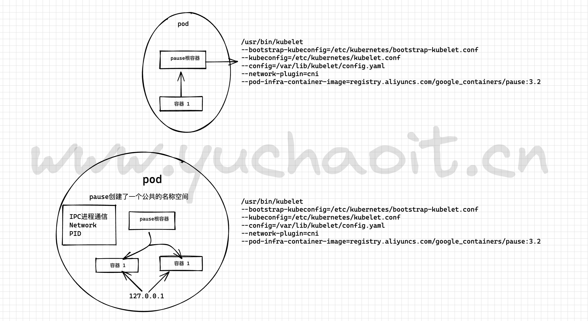
pod内共享网络空间
1.pod内的所有容器，都通过container模式，使用pause容器的网络空间
2.容器看到的网络环境，就是根容器的环境
3.pod内的一组容器可以直接走localhost通信
4.pod内的多个容器不能重复用同一端口
5.pod的生命周期，代表了内部的所有容器生命周期
查看pod内容器的网络信息
[root@k8s-node-11 ~]#docker inspect 2c3 |grep -i networkmode
"NetworkMode": "container:403fbe24581c63631b036f4d7f0b9b372b8e24e3c675943c87eee11ccdc8780e",
[root@k8s-node-11 ~]#
查看pod内共享的文件系统
默认情况下的pod内的容器，是隔离文件系统的
如果要让多个容器共享文件数据，基于volume即可实现，然后分别进行volumeMounts挂载即可。
pod内运行多个容器
提示信息
# 指定节点运行pod
[root@k8s-master-10 ~]#kubectl explain pod.spec.nodeName
KIND: Pod
VERSION: v1
FIELD: nodeName <string>
DESCRIPTION:
NodeName is a request to schedule this pod onto a specific node. If it is
non-empty, the scheduler simply schedules this pod onto that node, assuming
that it fits resource requirements.
[root@k8s-master-10 ~]#
# pod数据映射给宿主机
https://kubernetes.io/zh-cn/docs/concepts/storage/volumes/#hostpath
yaml
apiVersion: v1
kind: Pod
metadata:
name: two-nginx
namespace: yuchao-linux # 单独开一个ns环境
spec:
nodeName: k8s-node-12
volumes:
- name: nginx-log
hostPath:
path: /var/log/nginx/
containers:
- name: nginx-two
image: nginx:alpine
volumeMounts:
- name: nginx-log
mountPath: /var/log/nginx/
- name: tail-log
image: busybox
args: [/bin/sh,-c,'tail -f /var/log/nginx/access.log']
volumeMounts:
- name: nginx-log
mountPath: /var/log/nginx/
图解多容器pod
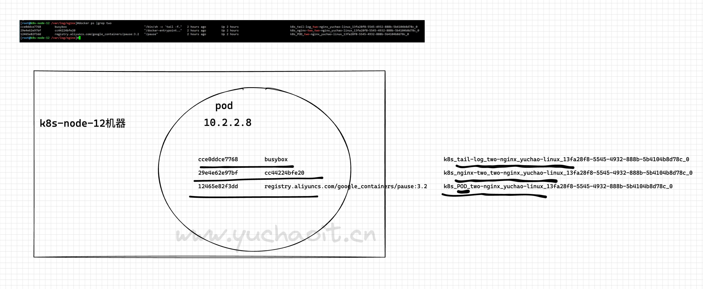
[root@k8s-master-10 ~]#kubectl create ns yuchao-linux
namespace/yuchao-linux created
[root@k8s-master-10 ~]#kubectl create -f tail-nginx.yml
pod/two-nginx created
[root@k8s-master-10 ~]#
[root@k8s-master-10 ~]#kubectl -n yuchao-linux get po -o wide
NAME READY STATUS RESTARTS AGE IP NODE NOMINATED NODE READINESS GATES
two-nginx 2/2 Running 0 89m 10.2.2.8 k8s-node-12 <none> <none>
[root@k8s-master-10 ~]#
进入pod中的某个容器
注意语法
[root@k8s-master-10 ~]#kubectl -n yuchao-linux exec -it two-nginx -c nginx-two -- sh
[root@k8s-master-10 ~]#kubectl -n yuchao-linux exec -it two-nginx -c tail-log -- sh
图解多容器下的日志访问与映射
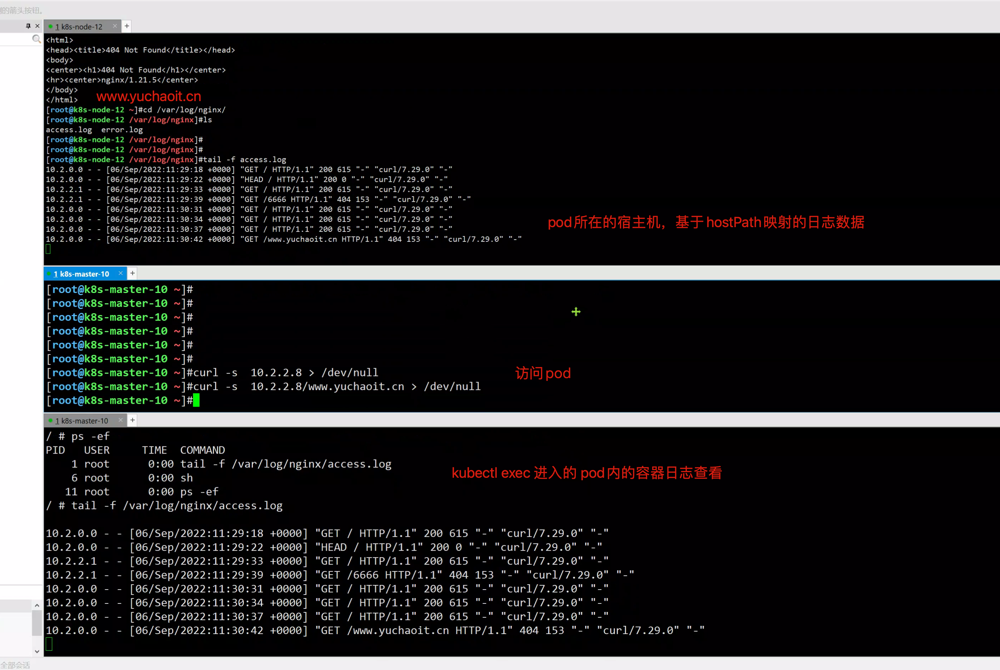
2.pod生命周期
pod状态与生命周期
2.1 pod运行状态
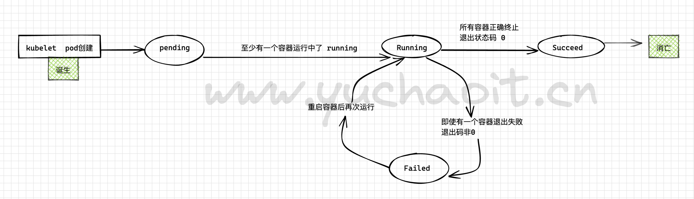
| 状态值 | 描述 | |
|---|---|---|
| Pending | API Server已经创建该Pod，等待调度器调度 | |
| ContainerCreating | 拉取镜像启动容器中 | |
| Running | Pod内容器均已创建，且至少有一个容器处于运行状态、正在启动状态或正在重启状态 | |
| Succeeded\ | Completed | Pod内所有容器均已成功执行退出，且不再重启 |
| Failed\ | Error | Pod内所有容器均已退出，但至少有一个容器退出为失败状态 |
| CrashLoopBackOff | Pod内有容器启动失败，比如配置文件丢失导致主进程启动失败 | |
| Unknown | 由于某种原因无法获取该Pod的状态，可能由于网络通信不畅导致 |
pending，pod已经被k8s组件确认处理中，但是一个、或者多个容器还在创建中，这个等待时间包括pod创建、或者镜像拉取时间。
running、pod已经运行到了具体Node上，且所有容器都被创建好，并且只要有一个容器还在运行中都是running。
succeeded 、pod中所有的容器都已成功终止、且不会再自动重启了。
Failed、pod中的容器都退出了、但是有一个容器非正常状态结束，异常挂了，退出码非0。
Unknown、如网络问题，导致的pod状态无法获取。
2.2 容器生命周期钩子
Kubernetes提供了容器生命周期钩子，在容器的生命周期的特定阶段执行调用，比如容器在停止前希望执行某项操作，就可以注册相应的钩子函数。目前提供的生命周期钩子函数如下所示。
- 启动后处理（PostStart）：容器启动后触发。
- 停止前处理（PreStop）：容器停止前触发。
实际使用时，只需配置Pod的lifecycle.postStart或lifecycle.preStop参数，如下所示。
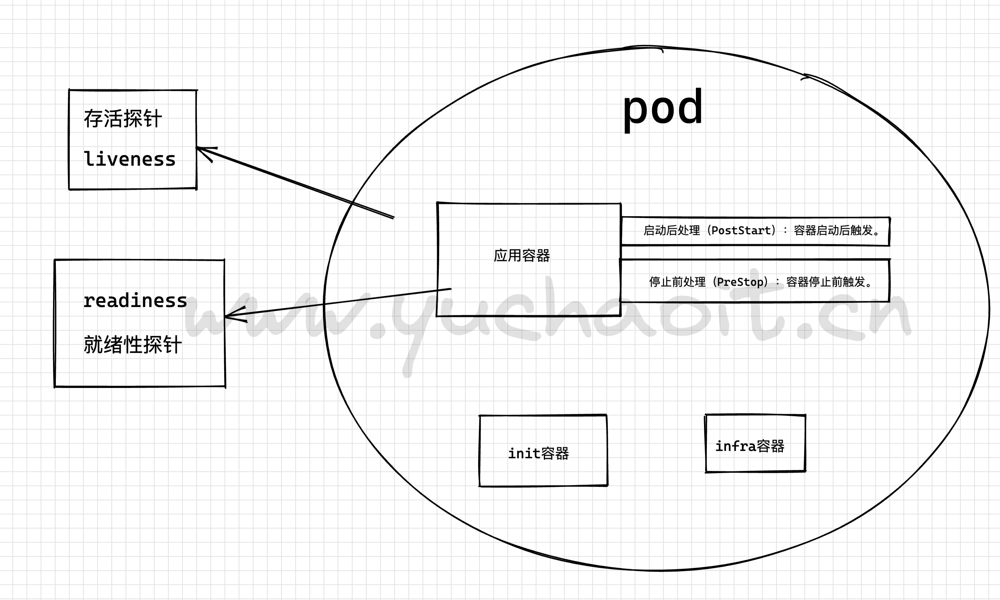
2.3 pod生命周期完整示意
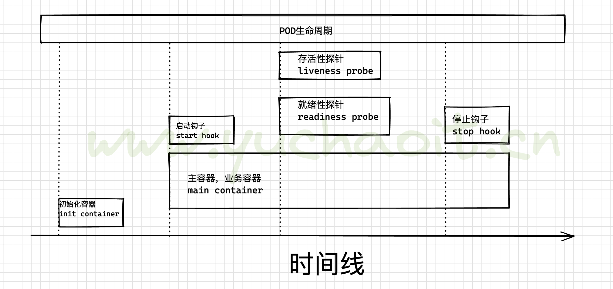
文字详解pod生命周期
init container
1.初始化容器就是指，主容器启动之前做一些准备环境初始化工作，例如两个容器都用到了volume，可以先用init容器进行目录授权修改。
2. 例如业务容器需要读取数据库，可以基于init容器先尝试数据库连接，确认正常后再启动业务容器。
# 钩子字段查询
[root@k8s-master-10 ~]#kubectl explain pod.spec.containers.lifecycle
poststart：在容器启动后，立即执行，但是时间有限，否则容器不会进入running状态
prestop：在容器停止前执行，一般用于优雅的关闭容器，环境清理。
# 容器存活、就绪探针
liveness probe：用于探测容器内的应用是否还运行中，如一个http服务。
readiness probe：用于探测容器内的应用是否就绪，可以干活了，例如在扩容pod后，得确保pod里的程序完全启动完毕，就绪后才应该将流量纷发给新pod。
init初始化容器
https://jimmysong.io/kubernetes-handbook/concepts/init-containers.html
pause容器
https://jimmysong.io/kubernetes-handbook/concepts/pause-container.html
3.pod如何封装容器
我们已知道pod是可以运行一个、多个容器的抽象组件。
在实际工作中该如何考虑，一个pod运行一个、还是多个容器？
图解POD部署思路
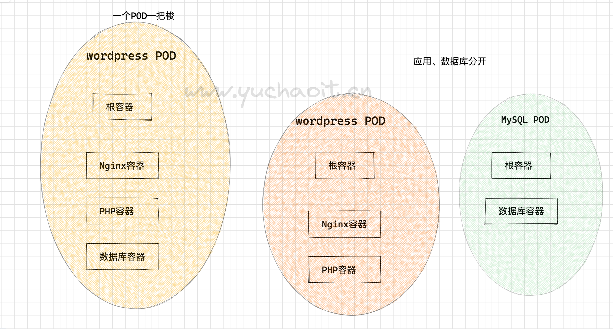
很明显，应用和数据库绑在一起，要升级，要迁移，牵一发动全身。
拆开应用与数据库要灵活地多。
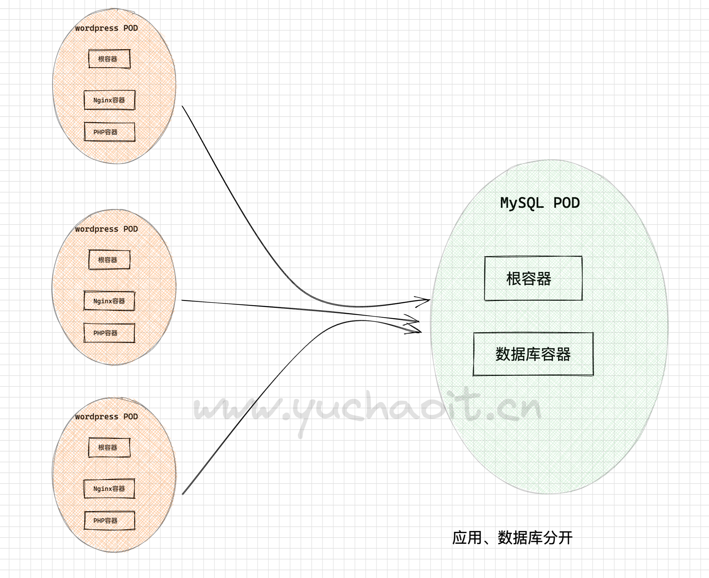
小结
当容器与容器之间需要联合发布，比较密切的时候，可以放在同一个POD里
如nignx、php/python
但php/python 和mysql必然是要分开放的
思考POD在负载均衡下的扩缩容，合理性即可。
4.初始化容器
关于emptyDir提示
emptyDir的生命周期与所属的pod相同。pod删除时，其emptyDir中的数据也会被删除。
emptyDir类型的volume在pod分配到node上时被创建，kubernetes会在node上自动分配 一个目录，因此无需指定宿主机node上对应的目录文件。
emptyDir Volume主要用于某些应用程序无需永久保存的临时目录，多个容器的共享目录等。
yaml
利用初始化容器，在nginx容器启动前，修改默认首页内容
apiVersion: v1
kind: Pod
metadata:
name: nginx-init
namespace: yuchaoit
labels:
app: myapp
spec:
nodeName: k8s-node-12
volumes:
- name: nginx-index
emptyDir: {}
initContainers:
- name: init
image: busybox
args: [/bin/sh,-c,"echo 'k8s yuchaoit.cn 666' > /usr/share/nginx/html/index.html"]
volumeMounts:
- name: nginx-index
mountPath: "/usr/share/nginx/html"
containers:
- name: nginx-app
image: nginx:alpine
ports:
- containerPort: 80
volumeMounts:
- name: nginx-index
mountPath: "/usr/share/nginx/html"
创建、访问nginx-init容器
[root@k8s-master-10 ~]#kubectl create ns yuchaoit
namespace/yuchaoit created
[root@k8s-master-10 ~]#kubectl create -f init-nginx.yml
pod/nginx-init created
[root@k8s-master-10 ~]#kubectl create -f init-nginx.yml
pod/nginx-init created
[root@k8s-master-10 ~]#kubectl get po -n yuchaoit -w
NAME READY STATUS RESTARTS AGE
nginx-init 1/1 Running 0 5s
[root@k8s-master-10 ~]#kubectl get po -n yuchaoit -owide
NAME READY STATUS RESTARTS AGE IP NODE NOMINATED NODE READINESS GATES
nginx-init 1/1 Running 0 18s 10.2.2.10 k8s-node-12 <none> <none>
[root@k8s-master-10 ~]#
[root@k8s-master-10 ~]#
[root@k8s-master-10 ~]#
[root@k8s-master-10 ~]#curl 10.2.2.10
k8s yuchaoit.cn 666
5.pod生命周期钩子
postStart
启动后处理（PostStart）：容器启动后触发。
apiVersion: v1
kind: Pod
metadata:
name: nginx-hook
namespace: yuchaoit
labels:
app: myapp-hook
spec:
nodeName: k8s-node-12
containers:
- name: nginx-hook
image: nginx:alpine
ports:
- containerPort: 80
lifecycle:
postStart:
exec:
command: [/bin/sh,-c,'echo k8s www.yuchaoit.cn 666 >> /usr/share/nginx/html/index.html']
创建、访问pod以及钩子效果
[root@k8s-master-10 ~]#kubectl delete -f poststart-pod.yml
pod "nginx-hook" deleted
[root@k8s-master-10 ~]#kubectl create -f poststart-pod.yml
pod/nginx-hook created
[root@k8s-master-10 ~]#kubectl -n yuchaoit get po -w
NAME READY STATUS RESTARTS AGE
nginx-hook 1/1 Running 0 4s
nginx-init 1/1 Running 0 3h52m
访问
[root@k8s-master-10 ~]#curl 10.2.2.12
<!DOCTYPE html>
<html>
<head>
<title>Welcome to nginx!</title>
<style>
html { color-scheme: light dark; }
body { width: 35em; margin: 0 auto;
font-family: Tahoma, Verdana, Arial, sans-serif; }
</style>
</head>
<body>
<h1>Welcome to nginx!</h1>
<p>If you see this page, the nginx web server is successfully installed and
working. Further configuration is required.</p>
<p>For online documentation and support please refer to
<a href="http://nginx.org/">nginx.org</a>.<br/>
Commercial support is available at
<a href="http://nginx.com/">nginx.com</a>.</p>
<p><em>Thank you for using nginx.</em></p>
</body>
</html>
k8s www.yuchaoit.cn 666
# k8s没有直接重启pod的命令，只能如下方法
- 基于yaml，重新replace，达到重启
- 基于deployment，进行scale调整replicaset副本数量，对pod进行重新调整，实现重启
- 删除重建pod
prestop
将nginx日志，挂载到宿主机上，然后退出pod，查看日志变化。
apiVersion: v1
kind: Pod
metadata:
name: nginx-hook-pre
namespace: yuchaoit
labels:
app: myapp-hook-pre
spec:
nodeName: k8s-node-12
volumes:
- name: nginxlog
hostPath:
path: /var/log/nginx/
containers:
- name: nginx-hook-pre
image: nginx:alpine
ports:
- containerPort: 80
lifecycle:
postStart:
exec:
command: [/bin/sh,-c,'echo k8s www.yuchaoit.cn 666 >> /usr/share/nginx/html/index.html']
preStop:
exec:
command: [/bin/sh,-c,'echo 再见吧您！超哥打卡下班了！www.yuchaoit.cn >> /var/log/nginx/prestop-test.log']
volumeMounts:
- name: nginxlog
mountPath: /var/log/nginx/
创建访问
[root@k8s-master-10 ~]#kubectl create -f prestop-pod.yml
pod/nginx-hook-pre created
[root@k8s-master-10 ~]#kubectl -n yuchaoit get po -owide
NAME READY STATUS RESTARTS AGE IP NODE NOMINATED NODE READINESS GATES
nginx-hook 1/1 Running 0 10m 10.2.2.12 k8s-node-12 <none> <none>
nginx-hook-pre 1/1 Running 0 5s 10.2.2.14 k8s-node-12 <none> <none>
nginx-init 1/1 Running 0 4h3m 10.2.2.10 k8s-node-12 <none> <none>
干掉停止pod
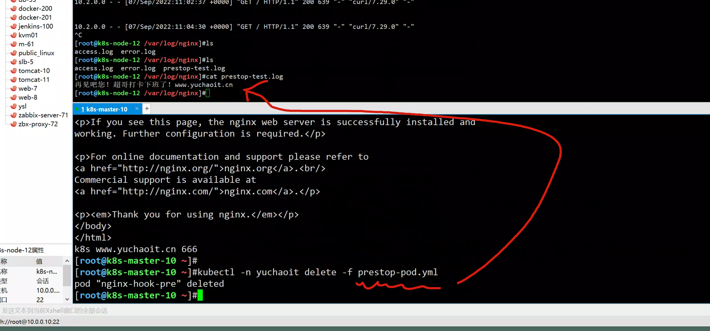
6.Pod健康探针
Kubernetes提供了自愈的能力，具体就是能感知到容器崩溃，然后能够重启这个容器。
但是有时候例如Java程序内存泄漏了，程序无法正常工作，但是JVM进程却是一直运行的，对于这种应用本身业务出了问题的情况，Kubernetes提供了Liveness Probe机制，通过检测容器响应是否正常来决定是否重启，这是一种很好的健康检查机制。
毫无疑问，每个Pod最好都定义Liveness Probe，否则Kubernetes无法感知Pod是否正常运行。
Kubernetes支持如下三种探测机制。
- HTTP GET：向容器发送HTTP GET请求，如果Probe收到2xx或3xx，说明容器是健康的。
- TCP Socket：尝试与容器指定端口建立TCP连接，如果连接成功建立，说明容器是健康的。
- Exec：Probe执行容器中的命令并检查命令退出的状态码，如果状态码为0则说明容器是健康的。
与存活探针对应的还有一个就绪探针（Readiness Probe），将在就绪探针（Readiness Probe）中会详细介绍。
存活探针、liveness probe
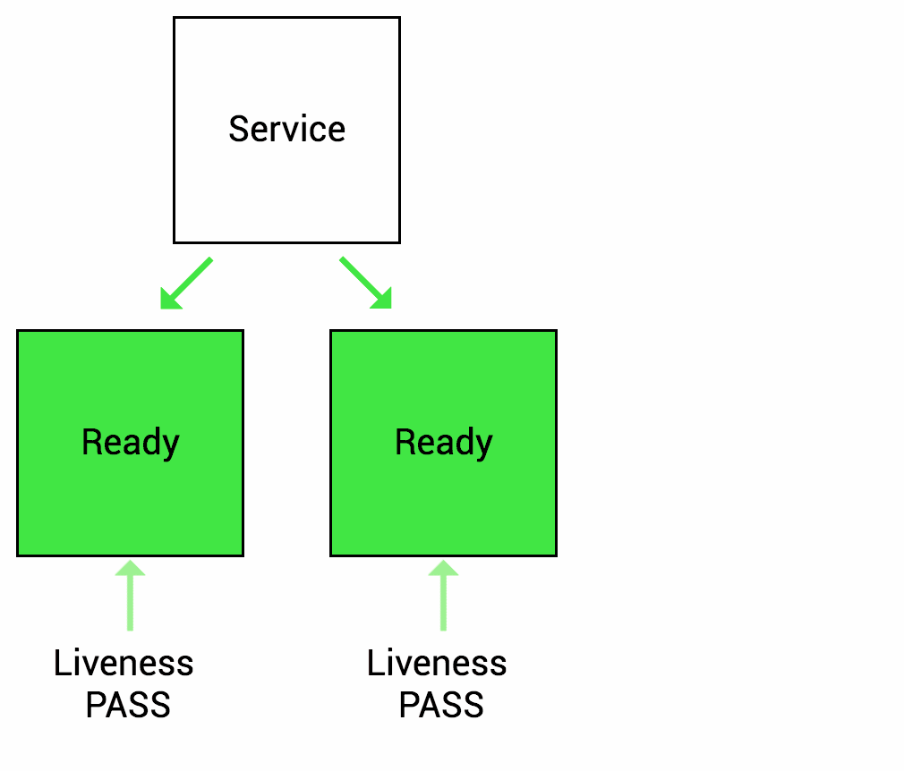
用来检测容器内的应用程序是否正常工作中、如果应用都无法提供访问，容器也没意义了、
当存活探针判断应用不正确时，就重启pod。
指定命令、探针
查询存活探针的参数
[root@k8s-master-10 ~]#kubectl explain pod.spec.containers.livenessProbe
apiVersion: v1
kind: Pod
metadata:
name: liveness-pod
namespace: yuchaoit
labels:
app: myapp-hook-pre
spec:
nodeName: k8s-node-12
volumes:
- name: nginx-html
hostPath:
path: /usr/share/nginx/html
containers:
- name: nginx-liveness
image: nginx:alpine
imagePullPolicy: IfNotPresent
lifecycle:
postStart:
exec:
command: [/bin/sh,-c,'echo k8s www.yuchaoit.cn 666 >> /usr/share/nginx/html/index.html']
preStop:
exec:
command: [/bin/sh,-c,'echo 再见吧您！超哥打卡下班了！www.yuchaoit.cn >> /usr/share/nginx/html/index.html']
livenessProbe:
exec:
command:
- cat
- /usr/share/nginx/html/index.html
initialDelaySeconds: 3
periodSeconds: 1
volumeMounts:
- name: nginx-html
mountPath: /usr/share/nginx/html
探针参数解释
livenessProbe: # 存活性探针
exec: # 你想咋探
command: # 执行什么命令，且退出状态码是0，非0就是错误
- cat
- /usr/share/nginx/html/index.html
initialDelaySeconds: 3 # 第一次执行探针的时候等待3秒
periodSeconds: 1 # 每隔3秒执行一次存活探针，默认10秒，最小1s
运行探针pod
[root@k8s-master-10 ~]#kubectl create -f liveness-pod.yml
pod/liveness-pod created
[root@k8s-master-10 ~]#kubectl -n yuchaoit get po -owide
NAME READY STATUS RESTARTS AGE IP NODE NOMINATED NODE READINESS GATES
liveness-pod 1/1 Running 0 8s 10.2.2.18 k8s-node-12 <none> <none>
nginx-hook 1/1 Running 0 40m 10.2.2.12 k8s-node-12 <none> <none>
nginx-hook-pre 1/1 Running 0 12m 10.2.2.17 k8s-node-12 <none> <none>
nginx-init 1/1 Running 0 4h33m 10.2.2.10 k8s-node-12 <none> <none>
[root@k8s-master-10 ~]#
查看探针pod状态
[root@k8s-master-10 ~]#kubectl -n yuchaoit get po -owide
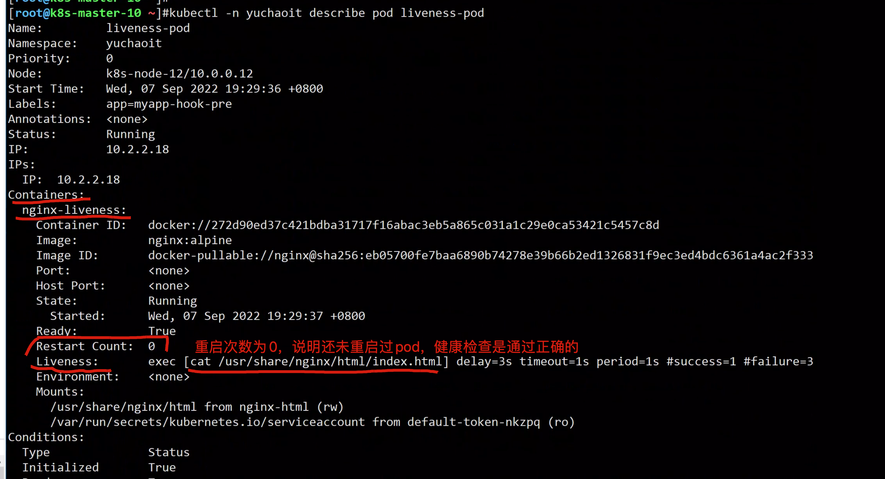
HTTP GET探针
yaml
apiVersion: v1
kind: Pod
metadata:
name: liveness-http-pod
namespace: yuchaoit
labels:
app: myapp-hook-pre
spec:
nodeName: k8s-node-12
volumes:
- name: nginx-html
hostPath:
path: /usr/share/nginx/html
containers:
- name: nginx-liveness
image: nginx:alpine
imagePullPolicy: IfNotPresent
lifecycle:
postStart:
exec:
command: [/bin/sh,-c,'echo k8s www.yuchaoit.cn 666 >> /usr/share/nginx/html/index.html']
preStop:
exec:
command: [/bin/sh,-c,'echo 再见吧您！超哥打卡下班了！www.yuchaoit.cn >> /usr/share/nginx/html/index.html']
livenessProbe:
#exec:
# command:
# - cat
# - /usr/share/nginx/html/index.html
httpGet:
path: /index.html
port: 80
initialDelaySeconds: 3
periodSeconds: 1
volumeMounts:
- name: nginx-html
mountPath: /usr/share/nginx/html
检查httpGet探针结果
[root@k8s-master-10 ~]#kubectl -n yuchaoit get po -owide
NAME READY STATUS RESTARTS AGE IP NODE NOMINATED NODE READINESS GATES
liveness-http-pod 1/1 Running 0 6s 10.2.2.19 k8s-node-12 <none> <none>
liveness-pod 1/1 Running 0 8m33s 10.2.2.18 k8s-node-12 <none> <none>
nginx-hook 1/1 Running 0 49m 10.2.2.12 k8s-node-12 <none> <none>
nginx-hook-pre 1/1 Running 0 20m 10.2.2.17 k8s-node-12 <none> <none>
nginx-init 1/1 Running 0 4h41m 10.2.2.10 k8s-node-12 <none> <none>
[root@k8s-master-10 ~]#
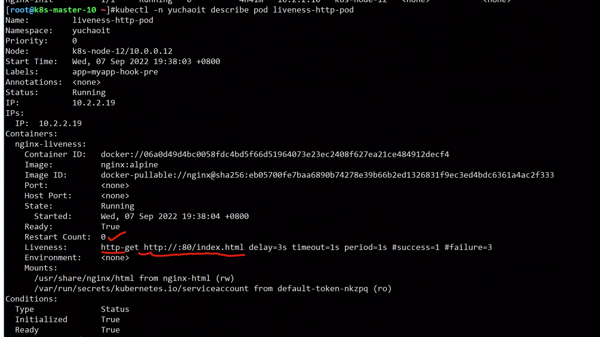
参数解释
如上，这个Probe往容器的80端口发送HTTP GET请求，如果请求不成功，Kubernetes会重启容器。
livenessProbe:
#exec:
# command:
# - cat
# - /usr/share/nginx/html/index.html
httpGet: # 基于http请求探针
path: /index.html # 请求地址，在200~400都算是正常的
port: 80 # 请求端口
initialDelaySeconds: 3
periodSeconds: 1
可以看到Pod当前状态是Running，Restart Count为0，说明没有重启。如果Restart Count不为0，则说明已经重启。
存活探针结果参数
这一行表示Liveness Probe的具体参数配置，其含义如下：
- delay：延迟，delay=0s，表示在容器启动后立即开始探测，没有延迟时间
- timeout：超时，timeout=1s，表示容器必须在1s内进行响应，否则这次探测记作失败
- period：周期，period=10s，表示每10s探测一次容器
- success：成功，#success=1，表示连续1次成功后记作成功
- failure：失败，#failure=3，表示连续3次失败后会重启容器
以上存活探针表示：容器启动后立即进行探测，如果1s内容器没有给出回应则记作探测失败。每次间隔10s进行一次探测，在探测连续失败3次后重启容器。
这些是创建时默认设置的，您也可以手动配置，如下所示。
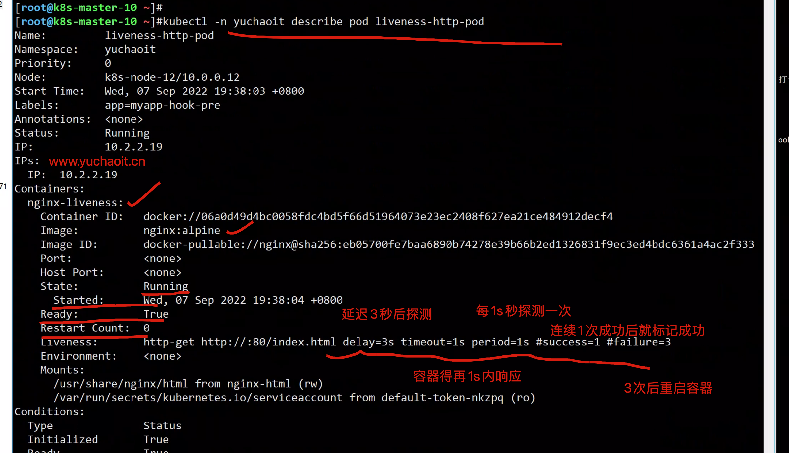
initialDelaySeconds一般要设置大于0，这是由于很多情况下容器虽然启动成功，但应用就绪也需要一定的时间，需要等就绪时间之后才能返回成功，否则就会导致probe经常失败。
另外failureThreshold可以设置多次循环探测，这样在实际应用中健康检查的程序就不需要多次循环，这一点在开发应用时需要注意。
配置有效的Liveness Probe
Liveness Probe应该检查什么
一个好的Liveness Probe应该检查应用内部所有关键部分是否健康，并使用一个专有的URL访问，例如/health，当访问/health 时执行这个功能，然后返回对应结果。这里要注意不能做鉴权，不然probe就会一直失败导致陷入重启的死循环。
另外检查只能限制在应用内部，不能检查依赖外部的部分，例如当前端web server不能连接数据库时，这个就不能看成web server不健康。
Liveness Probe必须轻量
Liveness Probe不能占用过多的资源，且不能占用过长的时间，否则所有资源都在做健康检查，这就没有意义了。例如Java应用，就最好用HTTP GET方式，如果用Exec方式，JVM启动就占用了非常多的资源。
7.就绪探针
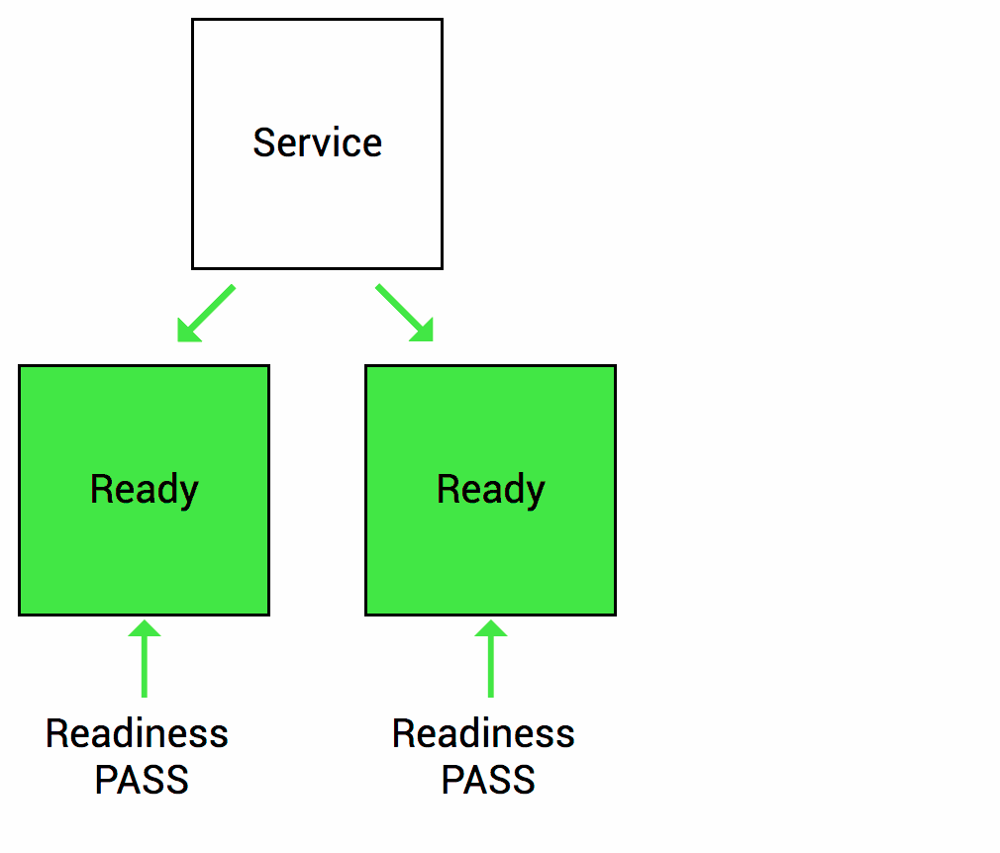
https://support.huaweicloud.com/basics-cce/kubernetes_0026.html
参考文档
一个新Pod创建后，Service就能立即选择到它，并会把请求转发给Pod，那问题就来了，通常一个Pod启动是需要时间的，如果Pod还没准备好（可能需要时间来加载配置或数据，或者可能需要执行一个预热程序之类），这时把请求转给Pod的话，Pod也无法处理，造成请求失败。
Kubernetes解决这个问题的方法就是给Pod加一个业务就绪探针Readiness Probe，当检测到Pod就绪后才允许Service将请求转给Pod。
Readiness Probe同样是周期性的检测Pod，然后根据响应来判断Pod是否就绪，与存活探针（Liveness Probe）相同，就绪探针也支持如下三种类型。
- Exec：Probe执行容器中的命令并检查命令退出的状态码，如果状态码为0则说明已经就绪。
- HTTP GET：往容器的IP:Port发送HTTP GET请求，如果Probe收到2xx或3xx，说明已经就绪。
- TCP Socket：尝试与容器建立TCP连接，如果能建立连接说明已经就绪。
有时候可能pod已经起来了，但是pod内的容器还未完全就绪，能对外提供访问，那么这个时候流量进入pod就会出现请求失败。
k8s提供了一个就绪探针，能让你确认应用可访问，只有探针通过后，k8s才将流量转发给pod。
yaml
Readiness Probe的配置与存活探针（livness probe）一样，都是在Pod Template的containers里面，如下所示，这个Readiness Probe向Pod发送HTTP请求，当Probe收到2xx或3xx返回时，说明Pod已经就绪。
apiVersion: v1
kind: Pod
metadata:
name: readiness-http-pod
namespace: yuchaoit
labels:
app: myapp-readiness
spec:
nodeName: k8s-node-12
volumes:
- name: nginx-html
hostPath:
path: /usr/share/nginx/html
containers:
- name: nginx-readiness
image: nginx:alpine
imagePullPolicy: IfNotPresent
lifecycle:
postStart:
exec:
command: [/bin/sh,-c,'echo k8s www.yuchaoit.cn 666 >> /usr/share/nginx/html/index.html']
preStop:
exec:
command: [/bin/sh,-c,'echo 再见吧您！超哥打卡下班了！www.yuchaoit.cn >> /usr/share/nginx/html/index.html']
livenessProbe:
#exec:
# command:
# - cat
# - /usr/share/nginx/html/index.html
httpGet:
path: /index.html
port: 80
initialDelaySeconds: 3
periodSeconds: 1
readinessProbe:
httpGet:
path: /read
port: 80
initialDelaySeconds: 10 # 容器启动后多久开始探测
timeoutSeconds: 2 # 表示容器必须在2s内做出相应反馈给probe，否则视为探测失败
periodSeconds: 30 # 探测周期，每30s探测一次
successThreshold: 1 # 连续探测1次成功表示成功
failureThreshold: 3 # 连续探测3次失败表示失败
volumeMounts:
- name: nginx-html
mountPath: /usr/share/nginx/html
运行就绪探针
[root@k8s-master-10 ~]#kubectl create -f readiness-pod.yml
pod/readiness-http-pod created
[root@k8s-master-10 ~]#kubectl -n yuchaoit get po readiness-http-pod -owide
NAME READY STATUS RESTARTS AGE IP NODE NOMINATED NODE READINESS GATES
readiness-http-pod 0/1 Running 0 21s 10.2.2.20 k8s-node-12 <none> <none>
[root@k8s-master-10 ~]#
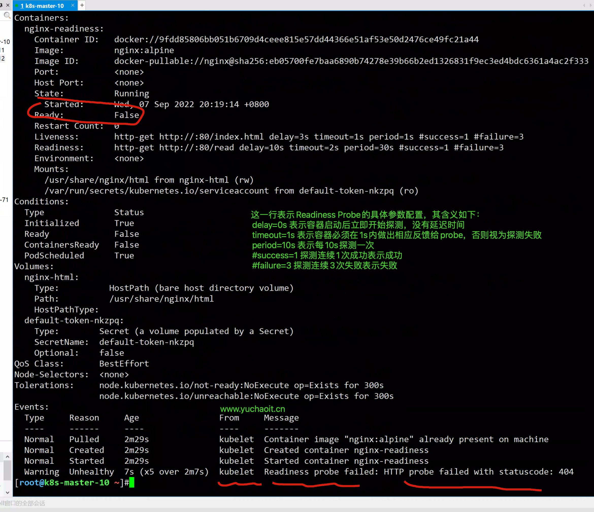
让pod就绪
[root@k8s-master-10 ~]#kubectl -n yuchaoit get po readiness-http-pod
NAME READY STATUS RESTARTS AGE
readiness-http-pod 0/1 Running 0 3m46s
[root@k8s-master-10 ~]#kubectl exec -n yuchaoit -it readiness-http-pod -- sh -c "echo www.yuchaoit.cn > /usr/share/nginx/html/read"
[root@k8s-master-10 ~]#
[root@k8s-master-10 ~]#curl 10.2.2.20
k8s www.yuchaoit.cn 666
k8s www.yuchaoit.cn 666
k8s www.yuchaoit.cn 666
[root@k8s-master-10 ~]#curl 10.2.2.20/read
www.yuchaoit.cn
[root@k8s-master-10 ~]#
[root@k8s-master-10 ~]#kubectl -n yuchaoit get po readiness-http-pod -owide
NAME READY STATUS RESTARTS AGE IP NODE NOMINATED NODE READINESS GATES
readiness-http-pod 1/1 Running 0 6m13s 10.2.2.20 k8s-node-12 <none> <none>
[root@k8s-master-10 ~]#
就绪结果describe
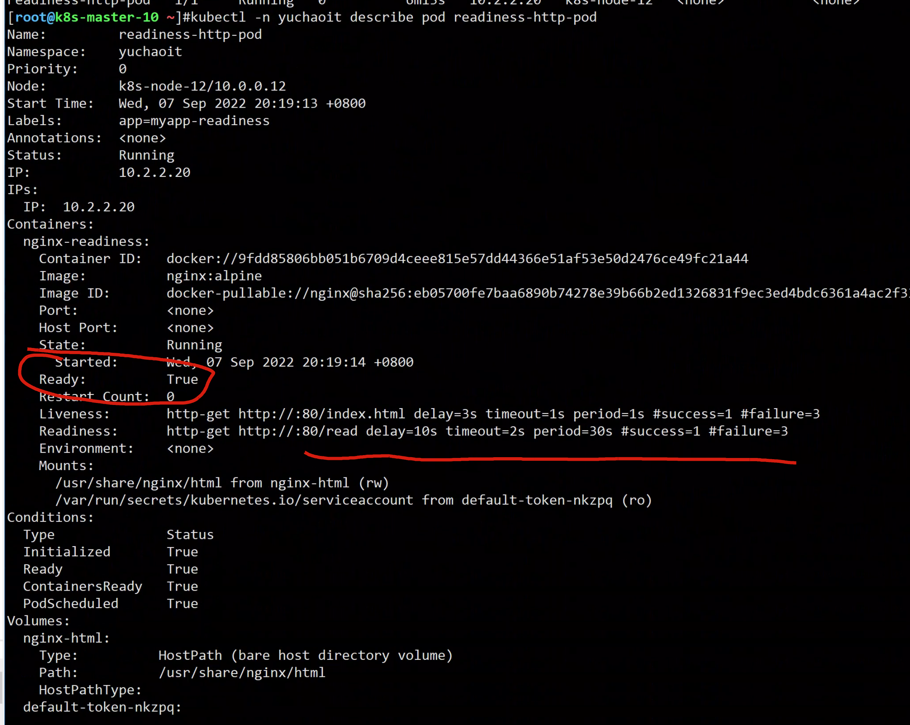
8.Pod资源限制
之前于超老师讲过容器docker可以利用CGroup进行资源限制，CPU、内存的主要资源使用率。
POD当然也一样。
资源限制单位
1 CPU = 1000m
0.5 CPU = 500m
1 Mib = 1024 Kib
1Mb = 1000KB
yaml
apiVersion: v1
kind: Pod
metadata:
name: limit-pod
namespace: yuchaoit
spec:
containers:
- name: resource-demo
image: nginx:alpine
ports:
- containerPort: 80
resources:
requests: # 节点所需的最小资源
memory: 50Mi
cpu: 150m
limits: # 限制pod最大资源使用量
memory: 100Mi
cpu: 200m
创建资源限制pod
[root@k8s-master-10 ~]#kubectl -n yuchaoit get po limit-pod -owide
NAME READY STATUS RESTARTS AGE IP NODE NOMINATED NODE READINESS GATES
limit-pod 1/1 Running 0 22s 10.2.1.9 k8s-node-11 <none> <none>
[root@k8s-master-10 ~]#
查看pod资源限制效果
[root@k8s-master-10 ~]#kubectl -n yuchaoit describe pod limit-pod
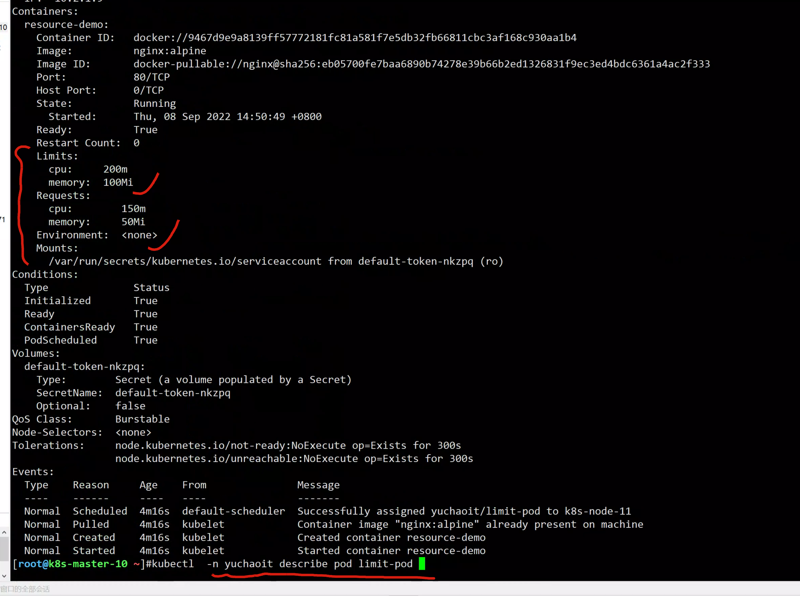
查看容器动态信息
[root@k8s-node-11 ~]#docker inspect 9467d9e9a813 |grep Cgroup
"Cgroup": "",
"CgroupParent": "kubepods-burstable-pod367e53f8_ee58_4a89_97f6_552108d85be2.slice",
"DeviceCgroupRules": null,
[root@k8s-node-11 ~]#
[root@k8s-node-11 /sys/fs/cgroup/cpu/kubepods.slice/kubepods-burstable.slice/kubepods-burstable-pod367e53f8_ee58_4a89_97f6_552108d85be2.slice]#cat cpu.cfs_quota_us
20000
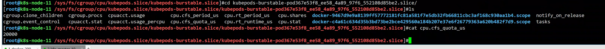
docker stats
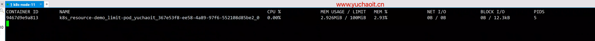